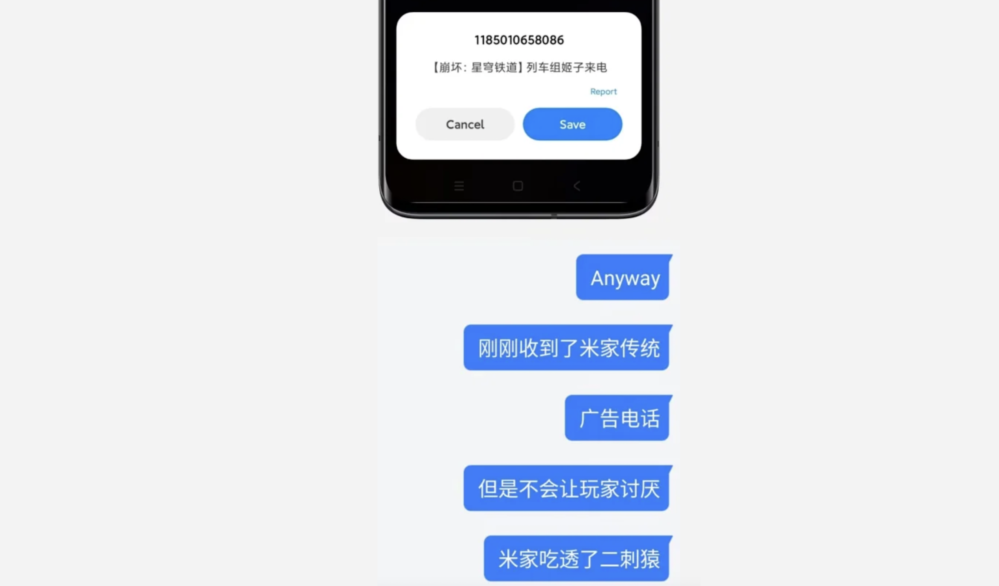
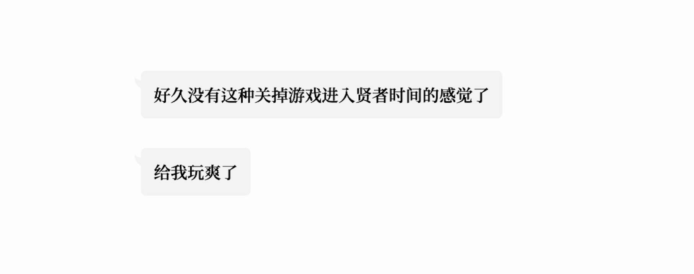
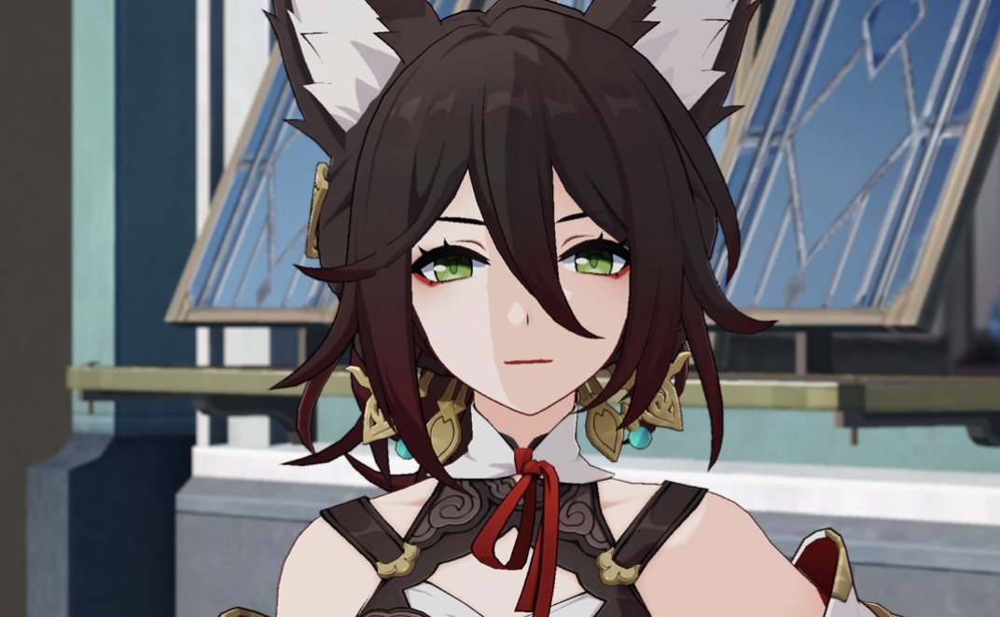

落地 5 分钟的一手感受，绝对的「傲慢与偏见」，但本人对此不负任何责任

群友日常关心我的情感情况。
但可惜，我目前的情感生活全在星铁（穹轨），日常在列车上陪着穿得像雅典娜披大衣的红发大姐姐喝咖啡（bushi）
米哈游确实很懂二刺猿。
「Tech Otakus Save the world!」
就连我这种自认为是「米家边缘玩家」的人也能接到姬子阿姨的亲切来电。
是的，是工商，是推销电话，但感觉不坏。

我确实很喜欢原神。
开服这几天忙碌中，导致我过了几天才开始探索崩铁的世界。
杰帕德的声优选了古川慎差评（bushi他应该去隔壁片场找派蒙谈恋爱，而不是让我疯狂串戏（？
左摇杆比原神低这一点就让我判它死刑了，毕竟游戏本身带开放探索要素但是虚拟摇杆那么难用我就要喷了（不过也有可能可以调只是我不知道）。这次不想分化体型差异的影响所以角色步幅和运动速度都是一样的嘛，感觉移动角色的时候像是拽着角色走，也很不舒服。角色模型这次精致很多，但是物理还是一塌糊涂；新手引导有点粉丝向了，或者说有点过于「自娱自乐」了，导致我这种只玩过原神的玩家不是很能乐呵进去……
我应该确实不是回合制游戏的受众。
而我也只是一个从原神开始入坑 RPG 的纯纯萌新玩家。
不过如果作为粉丝向作品来说，崩铁应该还是很成功的。
它太成功了，就连不是很能看懂的我都能感知到策划在里面埋入了大量的「惊喜」。这是一个具象化的赛博模拟器，是一个 B （站网）友的 Truly 「理想乡」。
我身边从刘伟娘化假扮客服时期就玩米家游戏的铁血二刺猿反正很满意。
他两天摆烂肝进度。昨天晚上和我说是「Masterpiece」、「Falcom 下一部作品真要被拉出来比较了」、「很难想象这是一个长线运营游戏带给我的体验和感动」。

你说的对。
但是《崩坏：星穹铁道》是由米哈游自主研发的一款全新银河冒险策略游戏。游戏发生在银河深处，在这里，被选中的人将乘坐「星穹列车」，你将扮演「开拓者」在不同世界间穿梭。于各方势力间周旋，和同伴一起解决一系列由「星核」引发的事件——同时，逐步发掘「崩坏」的真相。
对我来说，原神代入感更强是其中的一个方面。（崩铁的角色更精致，但是无机质感更强，更像是「赛博手办」。原神的机制「跑动感」更强，更能引起我的好感。）更重要的是，扒原神里逢的文化原型让我乐在其中。当年看到须弥设定的一些脑洞一一兑现的会心一笑让我甚是满足。相比而言，崩铁的互联网黑话和二刺猿自娱自乐就纯属是我的知识盲区了。
然后开服的 BUG 有点多唔米哈游……（虽然必然比不上 Bug 塔）
然后至少现在，至少现在它不符合我对它的预期。（然后连着玩了十几个小时）
或许，这只是因为我现在还不能感受这作品中的「爱与期待」。
这份游戏中的「爱与期待」太过厚重.
但这才应该是「开拓者」的宿命。让我去发掘新的热爱吧！
请给我时间，给我时间探索这样的历程。
BTW，模型确实精致了很多，不断进步的米哈游啊（！
介绍一下：

狐狸正统在中国
狐狸正统在仙舟
正宗狐狸
坚持在仙舟用新鲜不知道啥精养
不含美颜 P 图嚼舌根
每天游戏一开，白白嫩嫩（？